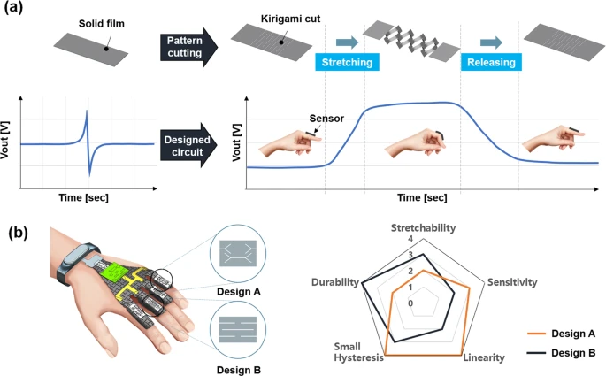
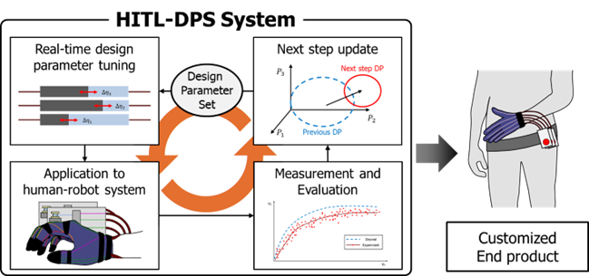
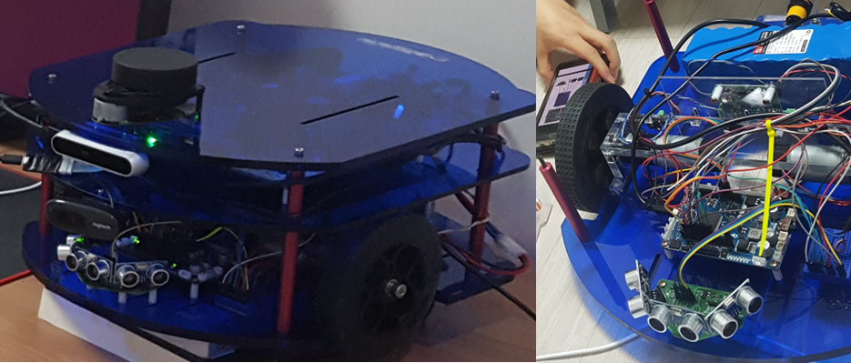

Research

Wearable Piezoelectric Strain Sensor / E-harvestor
Details
Piezoelectric strain sensor with high sensitivity and high stretchability based on
kirigami design cutting
Young-Gyun Kim, Ji-Hyeon Song, Seongheon Hong, Sung-Hoon Ahn
npj Flexible Electronics, 2022. (
paper /
application glove schematic & PCB
design /
code )
Unfortunately, source code for emebedded controller(nrf52810) was lost.
It will be uploaded as soon as found in some directory...
Some additional information not inclued in manuscript(mainly about application glove):
Embedded: nRF5 SDK, softdevice s132, SEGGER Embedded Studio.
PC: Max 8
Improved performance of stretchable piezoelectric energy harvester based on stress
rearrangement
Young-Gyun Kim*, Seongheon Hong*, Bosun Hwang, Sung-Hoon Ahn, Ji-Hyeon Song
Scientific Reports, (* indicates co-first authors. Accepted)

Rehabilitation Glove : Human In The Loop - Design Parameter Set System
Finger Mockup Video - springlike
Details
Implementation of Equivalent Multi-Extensor HITL-DPS system for Design of
Customized Extensor
Seongheon Hong, in progress, undergraduate thesis
( code
)
Contests
7th Robot Fusion Festival, Dajeon

AI Service Robot Competition
details
Piezoelectric strain sensor with high sensitivity and high stretchability based on kirigami
design cutting
Young-Gyun Kim, Ji-Hyeon Song, Seongheon Hong, Sung-Hoon Ahn
npj Flexible Electronics, 2022. (
paper /
application glove schematic & PCB
design /
code )
Unfortunately, source code for emebedded controller(nrf52810) was lost.
It will be uploaded as soon as found in some directory...
Some additional information not inclued in manuscript(mainly about application glove):
Embedded: nRF5 SDK, softdevice s132, SEGGER Embedded Studio.
PC: Max 8
Improved Performance of Stretchable Piezoelectric Energy Harvester Based on Stress
Rearrangement
Young-Gyun Kim*, Seongheon Hong*, Bosun Hwang, Sung-Hoon Ahn, Ji-Hyeon Song
Scientific Reports, (Accepted)